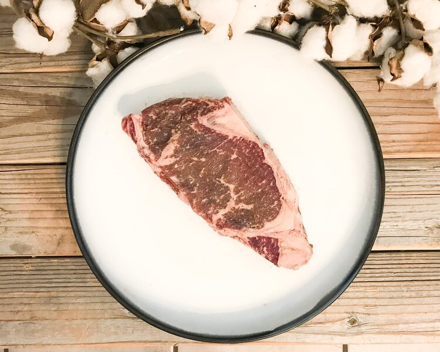
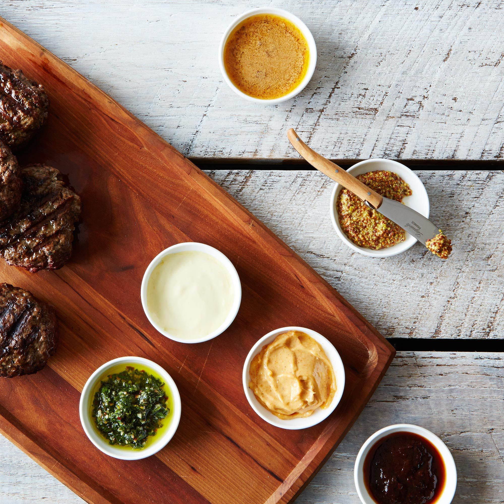
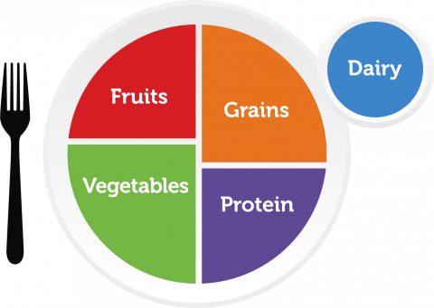
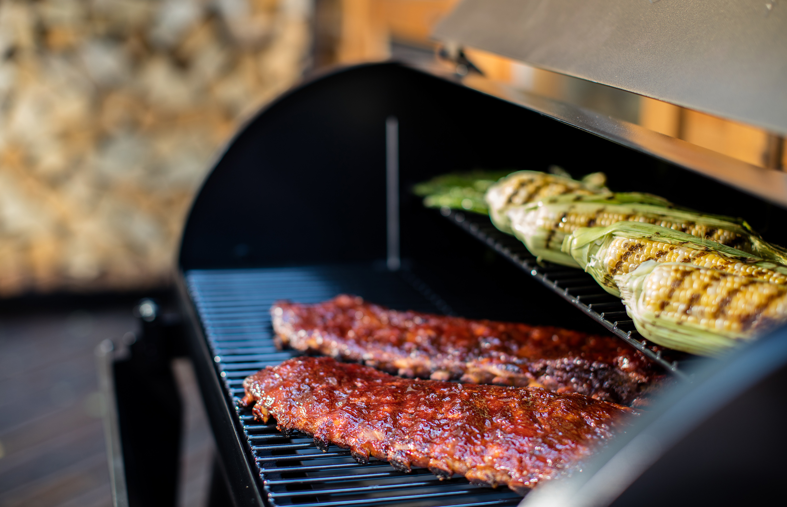

Links to Related Websites
Christiansen's Family Farm
Christiansen Farm is one of Utah's premier provider of All Natural, Humanely Treated, Pasture Raised, Bershire Pork and Grass Fed Beef. This is where we recieve the best meat around to make our food taste even better!
Food52
Food52 has the best Cookware, Tableware, and Flateware! These are essentials for the kitchen! With these, our food looks 10x more apetizing!
My Plate
My plate gives us the information we need to help keep our meals healthy! It shows examples of the types of food groups to let us know what we should put into our menu's!
Fresh Jax
Fresh Jax provides the seasoning that makes our dishes taste amazing! They are organic spice blends that you can't get anywhere else!

Traeger Grills
Traeger has the grills of your dreams! Our personal favorite is the Pro 34! They make that meat taste marvelous!
